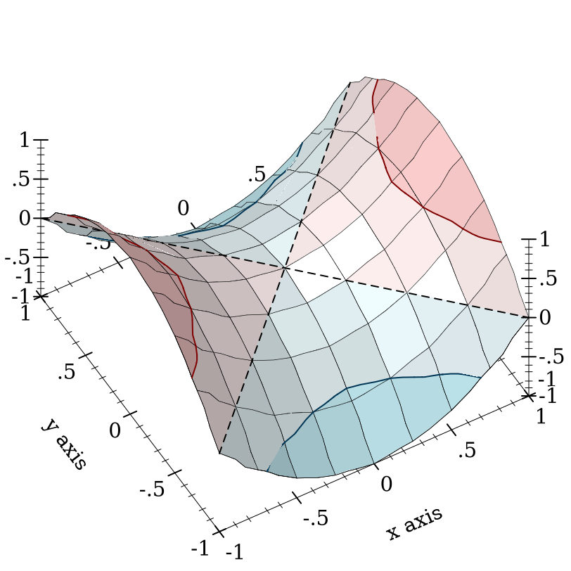
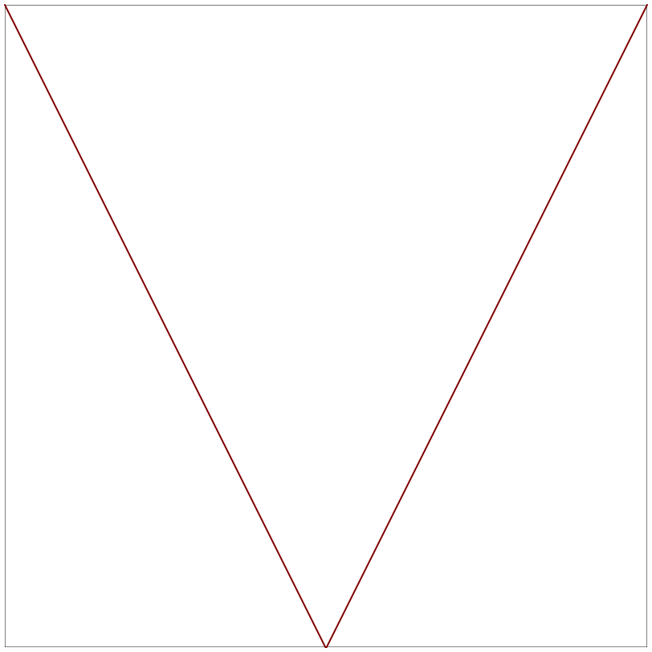

6 轴变换和刻度线
| (require plot) | package: plot-gui-lib |
6.1 轴变换
> (parameterize ([plot-x-transform log-transform]) (plot (function sin 1 100)))
> (parameterize ([plot-x-transform log-transform] [plot-x-ticks (log-ticks)]) (plot (function sin 1 100)))
> (parameterize ([plot-x-transform log-transform]) (plot3d (surface3d + 0.01 1 0.01 1)))
> (parameterize ([plot-x-transform log-transform]) (plot3d (surface3d + 0.01 1 0.01 1 #:samples 3)))
parameter
(plot-x-transform transform) → void? transform : axis-transform/c
= id-transform
parameter
(plot-y-transform transform) → void? transform : axis-transform/c
= id-transform
parameter
(plot-z-transform transform) → void? transform : axis-transform/c
= id-transform
value
value
> (parameterize ([plot-x-transform log-transform]) (plot (function (λ (x) x) -1 1))) log-transform: expects type <positive real> as 1st argument, given: -1; other arguments were: 1
procedure
(stretch-transform a b scale) → axis-transform/c
a : real? b : real? scale : (>/c 0)
> (parameterize ([plot-x-transform (stretch-transform -1 1 20)] [plot-x-ticks (ticks-add (plot-x-ticks) '(-1 1))]) (plot (list (y-axis -1 #:ticks? #f) (y-axis 1 #:ticks? #f) (function (λ (x) (/ (sin x) x)) -14 14 #:width 2 #:color 4 #:label "y = sin(x)/x") (point-label (vector 0 1) "y → 1 as x → 0" #:anchor 'bottom-right)) #:y-max 1.2))
procedure
(collapse-transform a b) → axis-transform/c
a : real? b : real?
> (parameterize ([plot-x-transform (collapse-transform 50 150)]) (plot (function atan 10 200 #:label "y = atan(x)") #:legend-anchor 'center))
value
procedure
(hand-drawn-transform freq) → axis-transform/c
freq : (>/c 0)
> (parameterize ([plot-x-transform (hand-drawn-transform 200)] [plot-y-transform (hand-drawn-transform 200)]) (plot (function sqr -1 1)))
> (parameterize ([plot-x-transform (hand-drawn-transform 50)] [plot-y-transform (hand-drawn-transform 50)] [plot-z-transform (hand-drawn-transform 50)]) (plot3d (contour-intervals3d (λ (x y) (- (sqr x) (sqr y))) -1 1 -1 1 #:samples 9))) 
构建新的轴变换的最简单的方法是使用轴变换组合器 axis-transform-append, axis-transform-bound 和 axis-transform-compose, 或者将 make-axis-transform 应用于 invertible-function 。
procedure
(axis-transform-append t1 t2 mid) → axis-transform/c
t1 : axis-transform/c t2 : axis-transform/c mid : real?
> (parameterize ([plot-x-transform (axis-transform-append (stretch-transform -2 -1 10) (stretch-transform 1 2 10) 0)]) (plot (function (λ (x) x) -3 3)))
procedure
(axis-transform-bound t a b) → axis-transform/c
t : axis-transform/c a : real? b : real?
> (parameterize ([plot-x-transform (axis-transform-bound log-transform 0.01 +inf.0)]) (plot (function (λ (x) x) -4 8 #:label "y = x")))
procedure
(axis-transform-compose t1 t2) → axis-transform/c
t1 : axis-transform/c t2 : axis-transform/c
> (parameterize ([plot-x-transform (axis-transform-compose log-transform (collapse-transform 2 4))]) (plot (function (λ (x) x) 1 5)))
procedure
(make-axis-transform fun) → axis-transform/c
fun : invertible-function?
> (parameterize ([plot-y-transform (make-axis-transform (invertible-function sqrt sqr))]) (plot (function (λ (x) x) 0 5)))
> (match-let ([(invertible-function f g) (apply-axis-transform log-transform 1 3)]) (define xs '(1 2 3)) (define new-xs (map f xs)) (define old-xs (map g new-xs)) (values new-xs old-xs))
'(1.0 2.261859507142915 3.0)
'(1.0 2.0 2.9999999999999996)
技术上来说, fun 不需要是真正的可反转的。 给定 fun = (invertible-function f g), 只要 f 是 g 的 left inverse 就够了; 也就是说,总是 (f (g x)) = x ,但不一定 (g (f x)) = x 。 如果 f 和 g 必须是彼此的严格倒数,就不可能有 collapse-transform 。
procedure
(apply-axis-transform t x-min x-max) → invertible-function?
t : axis-transform/c x-min : real? x-max : real?
6.2 轴刻度
每个绘图轴都有两组独立的刻度线: near 度线和 far 度线。
parameter
(plot-x-ticks) → ticks?
(plot-x-ticks ticks) → void? ticks : ticks?
= (linear-ticks)
parameter
(plot-x-far-ticks ticks) → void? ticks : ticks?
= (ticks-mimic plot-x-ticks)
parameter
(plot-y-ticks) → ticks?
(plot-y-ticks ticks) → void? ticks : ticks?
= (linear-ticks)
parameter
(plot-y-far-ticks ticks) → void? ticks : ticks?
= (ticks-mimic plot-y-ticks)
parameter
(plot-z-ticks) → ticks?
(plot-z-ticks ticks) → void? ticks : ticks?
= (linear-ticks)
parameter
(plot-z-far-ticks ticks) → void? ticks : ticks?
= (ticks-mimic plot-z-ticks)
> (parameterize ([plot-x-label "Near x axis"] [plot-y-label "Near y axis"] [plot-z-label "Near z axis"] [plot-x-ticks (date-ticks)] [plot-y-ticks (time-ticks)] [plot-z-ticks (fraction-ticks)] [plot-x-far-label "Far x axis"] [plot-y-far-label "Far y axis"] [plot-z-far-label "Far z axis"] [plot-x-far-ticks (linear-ticks)] [plot-y-far-ticks (currency-ticks)] [plot-z-far-ticks (log-ticks #:base 2)]) (plot3d (lines3d '(#(1 1 1) #(40000000 4 4)) #:style 'transparent) #:angle 45 #:altitude 50 #:title "Axis Names and Tick Locations"))
Major ticks 比 minor ticks 长。 主要刻度线的标签总是被画出来,除非与附近的刻度线折叠在一起。小刻度线的标签永远不会被绘制。
> (parameterize ([plot-z-ticks (currency-ticks)]) (define (saddle x y) (- (sqr x) (sqr y))) (values (plot (contour-intervals saddle -1 1 -1 1 #:label "z") #:legend-anchor 'center) (plot3d (contour-intervals3d saddle -1 1 -1 1 #:label "z") #:legend-anchor 'center)))
procedure
(contour-ticks z-ticks z-min z-max levels intervals?) → (listof tick?) z-ticks : ticks? z-min : real? z-max : real? levels : (or/c 'auto exact-positive-integer? (listof real?)) intervals? : boolean?
> (map pre-tick-value (filter pre-tick-major? (ticks-generate (plot-z-ticks) 0 1))) '(0 1/5 2/5 3/5 4/5 1)
> (map pre-tick-value (contour-ticks (plot-z-ticks) 0 1 'auto #f)) '(1/5 2/5 3/5 4/5)
parameter
(plot-d-ticks) → ticks?
(plot-d-ticks ticks) → void? ticks : ticks?
= (linear-ticks)
parameter
(plot-r-ticks) → ticks?
(plot-r-ticks ticks) → void? ticks : ticks?
= (linear-ticks)
struct
(struct ticks (layout format) #:extra-constructor-name make-ticks) layout : ticks-layout/c format : ticks-format/c
> (ticks-generate (plot-x-ticks) 1/3 2/3)
(list
(tick 7/20 #f ".35")
(tick 2/5 #t ".4")
(tick 9/20 #f ".45")
(tick 1/2 #t ".5")
(tick 11/20 #f ".55")
(tick 3/5 #t ".6")
(tick 13/20 #f ".65"))
parameter
(ticks-default-number number) → void? number : exact-positive-integer?
= 4
> (plot (function (λ (x) (count pre-tick-major? ((linear-ticks-layout #:number 8) 0 x))) 0.1 10) #:x-label "Interval [0,x]" #:y-label "Number of ticks")
6.2.1 线性刻度
procedure
(linear-ticks-layout [ #:number number #:base base #:divisors divisors] #:scientific? scientific?) → ticks-layout/c number : exact-positive-integer? = (ticks-default-number) base : (and/c exact-integer? (>=/c 2)) = 10 divisors : (listof exact-positive-integer?) = '(1 2 4 5) scientific? : #t
procedure
(linear-ticks-format #:scientific? scientific?)
→ ticks-format/c scientific? : #t
procedure
(linear-ticks [ #:number number #:base base #:divisors divisors]) → ticks? number : exact-positive-integer? = (ticks-default-number) base : (and/c exact-integer? (>=/c 2)) = 10 divisors : (listof exact-positive-integer?) = '(1 2 4 5)
为了布置刻度, linear-ticks-layout 找到最接近坐标轴区间大小的 base 的幂, 选择一个简单的第一个刻度,然后使用 divisors 选择一个跳过长度, 在不超过 number 的情况下使刻度的数量最大化。 关于非默认参数的战略使用, 请参见 bit/byte-ticks, currency-ticks 和 fraction-ticks 。 默认参数对应于标准的 1-2-5-in-base-10 规则,几乎在所有的绘图刻度布局中使用。
为了格式化刻度线, linear-ticks-format 使用 real->plot-label 传递 scientific? 的值, 并使用 digits-for-range 来确定小数点扩展中的最大小数点。
Changed in version 1.1 of package plot-gui-lib: 为 linear-ticks-format 和 linear-ticks 添加了 #:scientific? 参数。
6.2.2 对数刻度
procedure
(log-ticks-layout [ #:number number #:base base]) → ticks-layout/c number : exact-positive-integer? = (ticks-default-number) base : (and/c exact-integer? (>=/c 2)) = 10
procedure
(log-ticks-format [ #:base base] #:scientific? scientific?) → ticks-format/c base : (and/c exact-integer? (>=/c 2)) = 10 scientific? : #t
procedure
(log-ticks [ #:number number #:base base] #:scientific? scientific?) → ticks? number : exact-positive-integer? = (ticks-default-number) base : (and/c exact-integer? (>=/c 2)) = 10 scientific? : #t
#:base 关键字参数是对数基数。 #:scientific 关键字参数禁用科学格式化,类似于 linear-ticks 。 参见 plot-z-far-ticks 的使用实例。
6.2.3 日期刻度
procedure
(date-ticks-layout [#:number number]) → ticks-layout/c
number : exact-positive-integer? = (ticks-default-number)
procedure
(date-ticks-format [#:formats formats]) → ticks-format/c
formats : (listof string?) = (date-ticks-formats)
procedure
(date-ticks [ #:number number #:formats formats]) → ticks? number : exact-positive-integer? = (ticks-default-number) formats : (listof string?) = (date-ticks-formats)
这些轴刻度将数值视为 自系统相关的世界协调时间(UTC)纪元以来的秒数 。 (例如,Unix 和 Mac OS X 的纪元是 1970 年 1 月 1 日 UTC,而 Windows 的纪元是 1601 年 1 月 1 日 UTC)。 使用 date->seconds 将本地日期转换为秒, 或使用 datetime->real 将日期转换为 UTC 秒,并考虑时区偏移。
实际上, date-ticks-layout 并不总是 相当 均匀地划分刻度。 例如,它将间隔一个月或更长时间的刻度线四舍五入到最近的月份。 一般来说, date-ticks-layout 试图将刻度放在分、时、日、周、月和年的边界处, 以及常见的倍数,如 90 天或 6 个月。
为了尽量避免显示重叠的标签, date-ticks-format 从 formats 中选择日期格式, 对于这些格式,标签不会包含多余的信息。
所有在 srfi/19 中给出的格式指定符(这些指定符来自 Unix 的 date 命令), 除了那些代表时区的,在日期格式字符串中是允许的。
parameter
(date-ticks-formats) → (listof string?)
(date-ticks-formats formats) → void? formats : (listof string?)
= 24h-descending-date-ticks-formats
value
=
'("~Y-~m-~d ~H:~M:~f" "~Y-~m-~d ~H:~M" "~Y-~m-~d ~Hh" "~Y-~m-~d" "~Y-~m" "~Y" "~m-~d ~H:~M:~f" "~m-~d ~H:~M" "~m-~d ~Hh" "~m-~d" "~H:~M:~f" "~H:~M" "~Hh" "~M:~fs" "~Mm" "~fs")
value
=
'("~Y-~m-~d ~I:~M:~f ~p" "~Y-~m-~d ~I:~M ~p" "~Y-~m-~d ~I ~p" "~Y-~m-~d" "~Y-~m" "~Y" "~m-~d ~I:~M:~f ~p" "~m-~d ~I:~M ~p" "~m-~d ~I ~p" "~m-~d" "~I:~M:~f ~p" "~I:~M ~p" "~I ~p" "~M:~fs" "~Mm" "~fs")
6.2.4 时间刻度
procedure
(time-ticks-layout [#:number number]) → ticks-layout/c
number : exact-positive-integer? = (ticks-default-number)
procedure
(time-ticks-format [#:formats formats]) → ticks-format/c
formats : (listof string?) = (time-ticks-formats)
procedure
(time-ticks [ #:number number #:formats formats]) → ticks? number : exact-positive-integer? = (ticks-default-number) formats : (listof string?) = (time-ticks-formats)
这些轴的刻度线将数值视为以秒为单位。 使用 datetime->real 将 sql-time 或 plot-time 值转换为秒。
一般来说, time-ticks-layout 试图将刻度放在分钟、小时和天的边界,以及常见的倍数,如 12 小时或 30 天。
为了尽量避免显示重叠的标签, time-ticks-format 从 formats 中选择了一种日期格式, 对于这种格式,标签不会包含多余的信息。
在 srfi/19 中给出的所有与时间有关的格式指定符 (它们来自 Unix 的 date 命令)在时间格式字符串中都是允许的。
parameter
(time-ticks-formats) → (listof string?)
(time-ticks-formats formats) → void? formats : (listof string?)
= 24h-descending-time-ticks-formats
value
=
'("~dd ~H:~M:~f" "~dd ~H:~M" "~dd ~Hh" "~dd" "~H:~M:~f" "~H:~M" "~Hh" "~M:~fs" "~Mm" "~fs")
value
=
'("~dd ~I:~M:~f ~p" "~dd ~I:~M ~p" "~dd ~I ~p" "~dd" "~I:~M:~f ~p" "~I:~M ~p" "~I ~p" "~M:~fs" "~Mm" "~fs")
6.2.5 货币刻度
procedure
(currency-ticks-format [ #:kind kind #:scales scales #:formats formats]) → ticks-format/c kind : (or/c string? symbol?) = 'USD scales : (listof string?) = (currency-ticks-scales)
formats : (list/c string? string? string?) = (currency-ticks-formats)
procedure
(currency-ticks [ #:number number #:kind kind #:scales scales #:formats formats]) → ticks? number : exact-positive-integer? = (ticks-default-number) kind : (or/c string? symbol?) = 'USD scales : (listof string?) = (currency-ticks-scales)
formats : (list/c string? string? string?) = (currency-ticks-formats)
#:kind 关键字参数是一个包含货币符号的字符串,或一个货币代码, 如 'USD, 'GBP 或 'EUR 。 currency-ticks-format 函数可以将大多数 ISO 4217 货币代码映射到其相应的货币符号。
#:scales 关键字参数是每个 103 尺度的后缀列表, 如 "K" (美国千,或公斤), "bn" (英国短尺度亿)或 "Md" (欧盟长尺度毫)。 非比例尺的数量被赋予十次方后缀,如 “×1021” 。
"~$": 用货币符号代替
"~w": 由金额的整个部分代替
"~f": 由小数部分替代,有2个或更多的小数位
"~s": 由刻度后缀代替
"~~": 用 “~” 代替
parameter
(currency-ticks-scales scales) → void? scales : (listof string?)
= us-currency-scales
parameter
(currency-ticks-formats formats) → void? formats : (list/c string? string? string?)
= us-currency-formats
(require plot) (currency-ticks-scales eu-currency-scales) (currency-ticks-formats eu-currency-formats)
尽管有文化敏感性,但在为当地读者编写程序时, 一般认为对外国货币使用当地货币标度和格式是恰当的,但要使用外国货币符号。
value
us-currency-scales : (listof string?) = '("" "K" "M" "B" "T")
value
uk-currency-scales : (listof string?) = '("" "k" "m" "bn" "tr")
value
eu-currency-scales : (listof string?) = '("" "K" "M" "Md" "B")
实际使用的缩写因地域而异,甚至在国家内部也是如此,但这些缩写似乎很常见。 进一步的长尺度后缀缩写,如 "台球",由于缺乏甚至微弱的共识而被省略。
value
= '("~$~w.~f~s" "(~$~w.~f~s)" "~$0")
value
= '("~$~w.~f~s" "-~$~w.~f~s" "~$0")
value
= '("~w,~f ~s~$" "-~w,~f ~s~$" "0 ~$")
6.2.6 其他刻度线
value
value
value
> (parameterize ([plot-x-ticks no-ticks] [plot-y-ticks no-ticks] [plot-x-label #f] [plot-y-label #f]) (list (plot (function /) #:x-min 0.01 #:x-max 1/4))) '(
)
> (parameterize ([plot-x-ticks no-ticks] [plot-y-ticks no-ticks] [plot-x-label #f] [plot-y-label #f]) (plot (polar (λ (θ) 1/3))))
> (parameterize ([plot-x-ticks no-ticks] [plot-y-ticks no-ticks] [plot-x-label #f] [plot-y-label #f]) (plot (function (λ (x) (abs (* 2 x)))) #:x-min -10 #:x-max 10)) 
> (parameterize ([plot-x-ticks no-ticks] [plot-y-ticks no-ticks] [plot-x-label #f] [plot-y-label #f]) (plot (inverse (λ (y) (* -3 (abs (sin y))))) #:y-min 0 #:y-max (* 2 pi)))

procedure
(bit/byte-ticks-format [ #:size size #:kind kind]) → ticks-format/c size : (or/c 'byte 'bit) = 'byte kind : (or/c 'CS 'SI) = 'CS
procedure
(bit/byte-ticks [ #:number number #:size size #:kind kind]) → ticks? number : exact-positive-integer? = (ticks-default-number) size : (or/c 'byte 'bit) = 'byte kind : (or/c 'CS 'SI) = 'CS
#:kind 关键字参数表示国际单位制 ('SI) 后缀,用于交流硬盘容量, 或计算机科学 ('CS)后缀,用于交流内存容量。
如果 kind 是 'SI, 基数为 10 ,除数为 '(1 2 4 5) 。
如果 kind 是 'CS, 基数为 2 ,除数为 '(1 2) 。
procedure
(fraction-ticks-format [ #:base base #:divisors divisors]) → ticks-format/c base : (and/c exact-integer? (>=/c 2)) = 10 divisors : (listof exact-positive-integer?) = '(1 2 3 4 5)
procedure
(fraction-ticks [ #:base base #:divisors divisors]) → ticks? base : (and/c exact-integer? (>=/c 2)) = 10 divisors : (listof exact-positive-integer?) = '(1 2 3 4 5)
6.2.7 刻度线组合器
procedure
(ticks-mimic thunk) → ticks?
thunk : (-> ticks?)
procedure
(ticks-scale t fun) → ticks?
t : ticks? fun : invertible-function?
> (parameterize ([plot-x-ticks (time-ticks)] [plot-y-far-ticks (ticks-scale (plot-y-ticks) (linear-scale 9/5 32))] [plot-y-label "Temperature (°C)"] [plot-y-far-label "Temperature (°F)"]) (define data (list #(0 0) #(15 0.6) #(30 9.5) #(45 10.0) #(60 16.6) #(75 41.6) #(90 42.7) #(105 65.5) #(120 78.9) #(135 78.9) #(150 131.1) #(165 151.1) #(180 176.2))) (plot (list (function (λ (x) (/ (sqr x) 180)) 0 180 #:style 'long-dash #:color 3 #:label "Trend") (lines data #:color 2 #:width 2) (points data #:color 1 #:line-width 2 #:label "Measured")) #:y-min -25 #:x-label "Time"))
6.2.8 刻度线数据类型和合约
struct
(struct pre-tick (value major?) #:extra-constructor-name make-pre-tick) value : real? major? : boolean?
请注意,布局函数返回 pre-tick ,即未标记的刻度线,而单独的格式函数用于产生刻度线的标签。
返回的标签通常应该是不同的,因为绘图库会认为标签为 string=? 的刻度线是重复的,并将其折叠, 然而,这一特性可以被自定义格式函数用来强制从绘图中移除一些刻度线。
轴的边界可以用来决定显示多少位小数,通常是通过对边界应用 digits-for-range 。
6.3 可逆函数
struct
(struct invertible-function (f g) #:extra-constructor-name make-invertible-function) f : (-> real? real?) g : (-> real? real?)
该函数本身是 f, 它的逆函数是 g 。 因为 real? 可以是不精确的,所以这个不变量必须是近似的,因此不能被强制执行。 (例如, (exp (log 10)) = 10.000000000000002)。 维护它的义务由构建它的人承担。
value
= (invertible-function (λ (x) x) (λ (x) x))
procedure
(invertible-compose f1 f2) → invertible-function?
f1 : invertible-function? f2 : invertible-function?
procedure
h : invertible-function?
procedure
(linear-scale m [b]) → invertible-function?
m : rational? b : rational? = 0